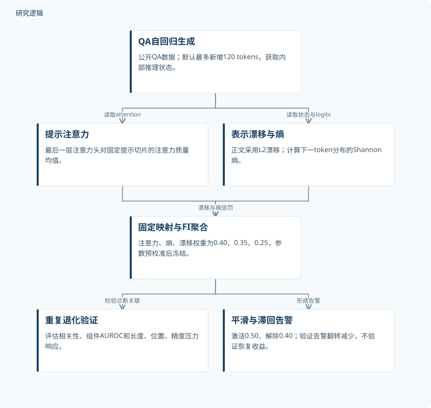
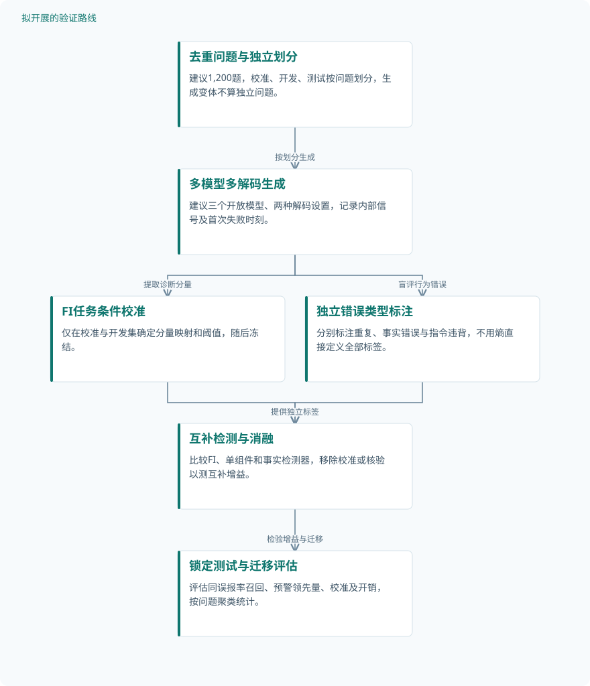

论文精读
自回归Transformer的认知疲劳：形式化与测量
Cognitive Fatigue in Autoregressive Transformers: Formalization and Measurement
精读更新 2026-10-06 21:31 · 依据论文全文整理
长程生成中的重复、指令遗忘与输出分布失稳，能否在答案完成前被发现？这篇论文提出疲劳指数FI，将提示注意力、隐藏表示漂移和输出熵组合为在线风险信号，无需重新训练模型。其价值在于把生成退化转化为可监测的过程，但主要证据来自重复型失败，而非全面任务准确率。读懂它，需要同时看清三信号的操作定义、检测实验的支持范围，以及从风险告警走向可靠性改善之间尚未跨越的距离。
文章目录
把生成退化从事后评分变成在线监测
自回归模型不断将自己的输出纳入后续上下文，错误和重复可能随生成推进而累积。离线评分只能评价已经完成的答案，在线诊断则有望为停止、复核或重新生成提供触发依据；本文围绕后一问题展开。
作者把这种渐进退化称为“认知疲劳”，强调连贯性、校准与可靠性的下降。这里的疲劳是解释性类比，不意味着模型具有认知体验，也不是结构材料疲劳；注意力稀释、数值压力等讨论仍不能替代因果机制验证。
三种内部信号如何汇成一个FI
提示注意力A_t取最后一层各注意力头分配给固定提示切片的注意力质量均值，默认切片K=64。表示漂移按正文定义为D_t=‖h_t−h_0‖₂，参照最后一个提示token的顶层状态；图示另写cosine drift，存在定义不一致。输出熵E_t采用Shannon熵，轨迹图单位为nats。
注意力惩罚随关注减少而增大，漂移经上限κ缩放，熵落在健康区间外才受罚。默认熵带为[3.8,5.0]，低熵和异常高熵均可提高风险；高端尺度β与漂移上限κ的数值在所给资料中未报告。FI_t=w_Aϕ_A(A_t)+w_Dϕ_D(D_t)+w_Eϕ_E(E_t)，权重依次为0.40、0.25、0.35，分数无量纲且位于[0,1]。
参数经小规模预试验选择后冻结，默认每2 tokens探测一次，平滑窗口L=5。公理与定理E.1约束的是可解释的加性度量形式，不唯一确定权重或退化机制；保序意义的尺度不变性也不保证跨设置绝对分数可比。实现需要logits、attention和hidden states，实测资源开销未报告。
原研究：内部探针到退化诊断


三信号并行提取后归一化聚合；重复检测与告警稳定性是不同验证目标，不包含已证实的恢复干预。
下载 SVG图示关系说明
实线表示相邻阶段的信息流，虚线表示跨阶段联系或反馈。
QA自回归生成 → 提示注意力：读取attention；QA自回归生成 → 表示漂移与熵：读取状态与logits；提示注意力 → 固定映射与FI聚合：注意力惩罚；表示漂移与熵 → 固定映射与FI聚合：漂移与熵惩罚；固定映射与FI聚合 → 重复退化验证：检验诊断关联；固定映射与FI聚合 → 平滑与滞回告警：形成告警
生成序列、组件消融与压力探针
验证使用公开的HotpotQA、TriviaQA和SQuAD，总计27,405条生成序列，除另有说明外使用OPT-2.7B。序列数不是独立问题数：独立问题、每题运行次数和增强数量未报告，校准数据与评估数据是否分离也未说明。实验是模型推理运行，而非物理试件测试或机器人实物验证。
默认解码为top-p=0.95、T=1.0、top-k=0，最大上下文2048 tokens、最大新增120 tokens，默认种子为{123,2027}。长度探针比较192、964、1446 tokens；位置探针固定总长度，将证据放在前、中、后部。精度探针配对比较FP16与4-bit NF4，主图观察60步，补充轨迹观察100步，均不能作为独立样本数。
组件消融比较聚合FI与熵、漂移、注意力单项，附录还提供权重单纯形扫描，并非完全没有权重敏感性证据。告警实验比较朴素单阈值和滞回规则，激活与解除阈值分别为0.50、0.40。九模型规模研究覆盖1B–13B，但架构、语料和对齐流程未充分控制。
| 验证任务 | 样本与规模 | 主要结果 |
|---|---|---|
| 跨数据集FI轨迹与重复相关性验证 | 共27,405条生成序列，分别为7,405、10,000、10,000条；独立问题数及相关分析实际纳入数量未报告。 | HotpotQA、TriviaQA、SQuAD全轨迹ρ分别为0.848、0.820、0.856，前段为0.425、0.404、0.375；平均FI为0.815、0.833、0.812。 |
| HotpotQA组件消融与权重扫描 | 消融独立问题数、实际序列数和类别数量未报告；权重扫描候选数量及独立评估规模也未报告。 | 消融表FI、熵、漂移、注意力AUROC为0.976、0.954、0.929、0.307；另处FI=0.978、漂移=0.951。扫描色标为0.935–0.975，显示宽阔高值区域。 |
| 上下文长度、证据位置与数值精度压力探针 | 独立问题数及运行数量未报告；主探针60步、补充精度轨迹100步均为观察长度，不是独立样本。 | 最长上下文提示注意力接近零；前部证据注意力为其他位置的5–10倍；NF4熵低谷更深、变异更大，另两信号较接近。 |
| 滞回告警的在线稳定性验证 | 该告警实验独立问题数、生成次数和逐模型数量未报告，不能直接套用总体评估池规模。 | HotpotQA从18.934降至1.567，TriviaQA从20.889降至1.433，SQuAD从21.085降至1.674次/生成；降幅91.718%、93.140%、92.060%。 |
展开数据来源、分组、对照与验证边界
跨数据集FI轨迹与重复相关性验证
数据来源。公开HotpotQA、TriviaQA、SQuAD，分别覆盖推理、知识与阅读理解；版本和抽样规则未报告。
分组与工况。分别按数据集统计，除另有说明外使用OPT-2.7B；比较完整轨迹与前20 tokens的FI。
数据划分。训练、验证、测试划分未报告；预校准数据与评估数据是否分离未说明，不能据冻结参数排除泄漏。
对照与消融。完整轨迹与前段FI互为时间范围对照；该相关分析未报告外部监测器基线。
评价指标。平均FI、精确n-gram重复token比例及Spearman ρ；n值和置信区间计算方法未报告。
验证边界。重复率不等于任务准确率，且与FI熵信号部分耦合；完整轨迹关联不构成独立的提前预测证据。
HotpotQA组件消融与权重扫描
数据来源。组件消融使用HotpotQA；权重扫描针对下游退化标签，但其具体数据组成未报告。
分组与工况。聚合FI对比熵、漂移和反向注意力；扫描注意力、漂移、熵权重和为1的候选组合。
数据划分。消融数据划分、阈值选择数据及权重扫描独立测试划分未报告，无法核验选择偏差。
对照与消融。Entropy Only、Drift Only、Attention Only（Inv）；困惑度及语义熵监测器未直接比较。
评价指标。严重重复退化判别AUROC；标签同时描述为重复率最高四分位和阈值0.6，对应关系未解释。
验证边界。结果口径存在不一致，缺少置信区间与检验细节；扫描不证明固定权重最优，也不能确定其跨任务泛化能力。
上下文长度、证据位置与数值精度压力探针
数据来源。长度与位置探针具体问题来源未报告；补充精度实验使用HotpotQA和TriviaQA。
分组与工况。长度192、964、1446 tokens；证据前、中、后置且总长度固定；FP16与4-bit NF4匹配提示和种子。
数据划分。各压力实验的数据划分未报告，不能据配对工况认定存在独立测试集。
对照与消融。长度和位置工况互为对照；FP16为NF4精度对照，除另有说明外使用OPT-2.7B。
评价指标。提示注意力、L2漂移、熵及FI动态；熵图单位nats，位置距离单位token distance。
验证边界。缺少效应量检验及任务准确率损失；主图NF4熵由统计量重建，不能等同原始逐步观测或直接校准证据。
滞回告警的在线稳定性验证
数据来源。HotpotQA、TriviaQA、SQuAD上的生成告警记录；具体版本和子集未报告。
分组与工况。分别比较朴素单阈值与平滑后滞回告警；滞回激活0.50、解除0.40，平滑窗口默认L=5。
数据划分。训练、验证、测试划分及告警阈值选择数据未报告，统计不确定性也未提供。
对照与消融。Naive single-threshold rule；该对照具体阈值未报告，不能推定与滞回激活阈值完全相同。
评价指标。Flips/Gen为平均告警状态切换次数，单位次/生成；Reduction为切换次数降幅，单位%。
验证边界。翻转减少不代表漏报或误报减少；没有闭环干预后的准确率、成本收益或真实部署可靠性验证。
重复检测有支持，早期预测与可靠性仍有边界
三个数据集的全轨迹FI与重复率相关系数为0.820–0.856，前20 tokens仅为0.375–0.425。HotpotQA消融表给出FI AUROC=0.976、熵单项0.954；另一处却报告0.978及不同漂移基线，不能静默合并。摘要中的AUROC=0.95、ρ=0.94也不能替代这些分项统计。
长度增加对应更低提示关注；位置探针中前部证据注意力为中部或末尾的5–10倍，但没有相应F1损失量化。NF4主要表现为更深、更波动的熵低谷，注意力和漂移较接近；主图NF4熵轨迹因绘图错误重建，直接校准指标未报告。小模型指令微调组更早坍塌、约7B趋势反转，只能视为受混杂影响的观察。
滞回规则将三个数据集的告警翻转减少超过91%，证明的是稳定性而非正确性或干预收益。本文最稳妥的定位是重复型退化风险代理：熵与重复标签部分耦合，完整轨迹相关也不等于提前预测。全面EM/F1、非重复事实错误、对话、代码及工具任务尚未得到对应验证。
从这篇论文走向下一项研究
以下为结合研究方向提出的候选方案，实验设计与预期目标有待验证。
从重复代理走向跨任务、可校准的风险监测
问题与短板。现有标签以重复为主，固定熵带的迁移性和提前预警能力不足。建议先区分重复、事实错误与指令违背，避免把单一FI阈值当成通用健康标准。
改进机制。保留三分量，增加任务条件校准及独立答案核验，分别输出风险而非强行合成安全分数。PoP预印本摘要提供层间状态检测事实错误的思路，但不证明其与FI组合有效。
候选创新。候选创新是将重复诊断、事实核验与任务条件校准组成分型监测器，并明确各自失效边界。新意应通过互补增益和迁移实验论证，而非宣称内部信号监测首次提出。
数据与实验设计。建议设计从公开QA数据抽取1,200个去重问题，按问题分为校准、开发、测试600/300/300题，配置三个开放模型及两种解码设置。多种生成只算同题重复观测，另采集错误类型标注。
对照与消融。比较原始FI、三单组件、困惑度和可实现的事实检测器；消融任务条件校准与独立核验。按问题聚类估计不确定性，并将留出模型测试与同模型测试分开报告。
成功判据。预注册成功判据：在相同误报率下提高各错误类型召回，且预警领先于首次行为失败。同步报告AUROC、AUPRC、校准误差、延迟和访问开销，不以全轨迹相关替代预警收益。
风险与替代方案。任务标签可能不一致，内部状态访问也可能增加成本。若事实检测器不可复现，先用人工盲评建立小型测试集；若跨模型失效，则退回分模型校准并保留拒判机制。
检验FI触发的干预是否真正改善生成
问题与短板。告警抖动减少尚未证明答案质量提高，高FI也未必需要干预。建议把检测、触发和恢复分别验证，重点识别无效重启、重复告警与额外推理成本。
改进机制。在冻结FI后随机分配提示摘要重注入、停止并复核或不干预。SoT预印本摘要展示状态驱动控制的思路，可作设计参照，但其报告收益不能迁移为FI干预的预期结果。
候选创新。候选创新是用受控试验检验风险触发与任务恢复之间的关系，并让不同退化分量选择不同动作。这属于拟议的新组合，不把已有状态控制或提示刷新技术当作新发明。
数据与实验设计。建议设计使用公开QA中的600个去重问题，分200题开发与400题锁定测试，采用两个可访问内部状态的开放模型。每题构造短长上下文和位置变体，固定种子配对，重复观测按问题聚类。
对照与消融。设置不干预、固定token时刻干预、FI触发干预和同频随机触发对照；分别消融滞回、动作选择及提示重注入。保持最大预算一致，防止额外算力被误认为触发策略优势。
成功判据。以锁定测试集的EM/F1改善及重复率下降为主要判据，同时限制新增token、延迟和误干预率。成功需优于同预算固定时刻对照，并报告问题级配对区间及无改善任务。
风险与替代方案。提示刷新可能丢失证据，停止生成也可能抬高表面正确率而降低覆盖。若恢复无效，改为告警后人工或独立核验，并联合报告回答覆盖率，避免只筛选成功答案。
拟议路线：分型风险与跨任务校准


对应第一条研究建议；样本规模、分组及成功判据均为建议设计，不表示已完成实验。
下载 SVG图示关系说明
实线表示相邻阶段的信息流，虚线表示跨阶段联系或反馈。
去重问题与独立划分 → 多模型多解码生成：按划分生成；多模型多解码生成 → FI任务条件校准：提取诊断分量；多模型多解码生成 → 独立错误类型标注：盲评行为错误；FI任务条件校准 → 互补检测与消融：冻结风险映射；独立错误类型标注 → 互补检测与消融：提供独立标签；互补检测与消融 → 锁定测试与迁移评估：检验增益与迁移